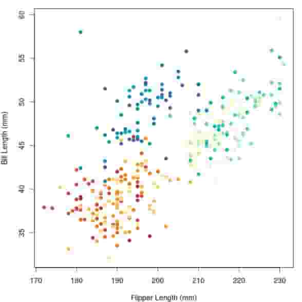
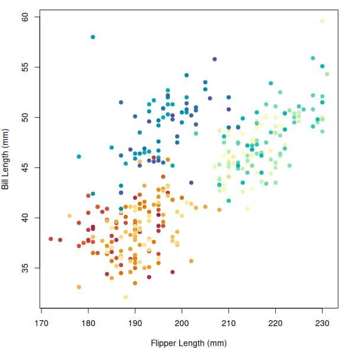
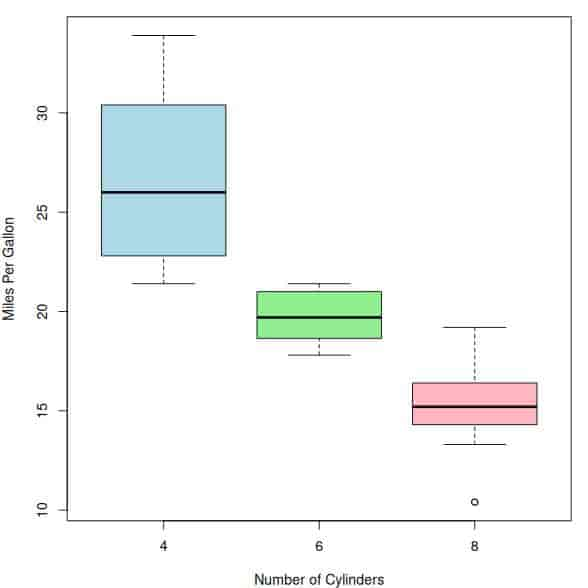
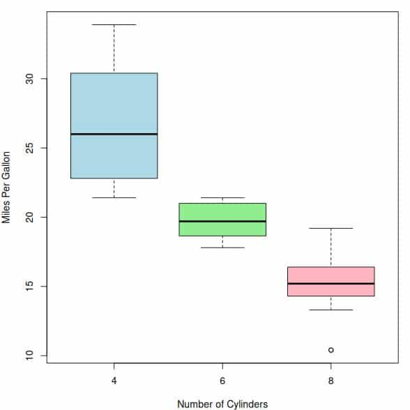
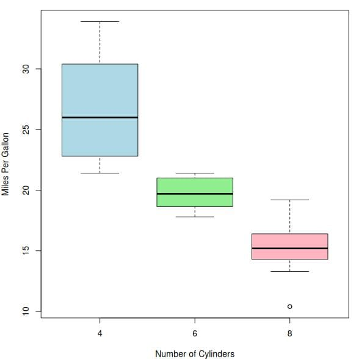
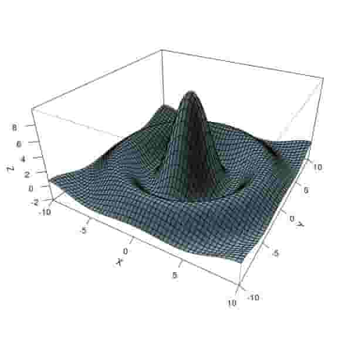
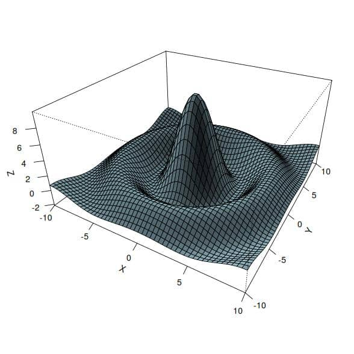
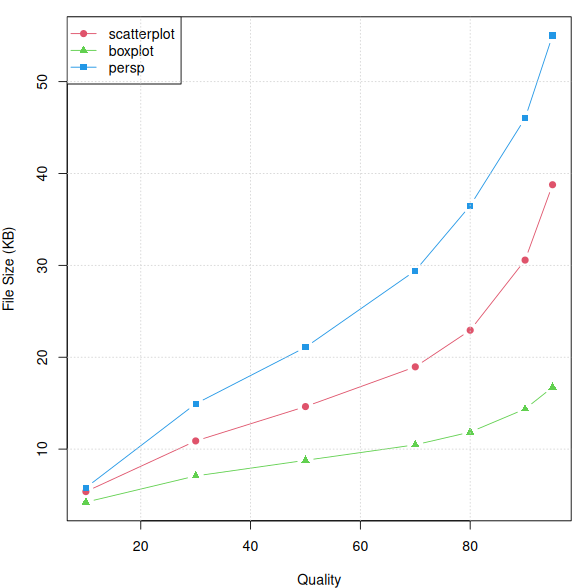
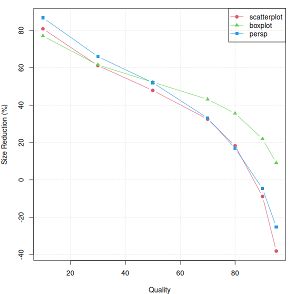
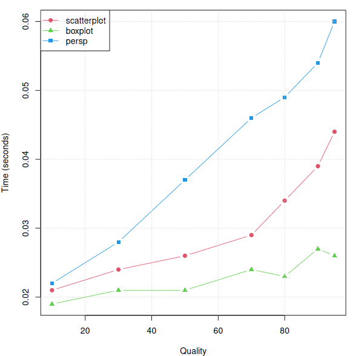

tinyjpg() BenchmarksThis document benchmarks the tinyjpg() function from the tinyimg package
across different quality levels. We test with three types of plots:
For each quality level, we measure:
First, we create test plots using the jpeg() device (set as default via the chunk option
dev = 'jpeg'):
1 Penguin bill length vs flipper length.
2 Miles per gallon by cylinder count.
3 A complex 3D surface defined by the function sin(r)/r.
Now let’s optimize these JPEG files at different quality levels and measure the results:
#> scatterplot-1.jpeg -> scatterplot_q10.jpg | 28.1 KB -> 5.4 KB (-80.9%)
#> scatterplot-1.jpeg -> scatterplot_q30.jpg | 28.1 KB -> 10.9 KB (-61.2%)
#> scatterplot-1.jpeg -> scatterplot_q50.jpg | 28.1 KB -> 14.6 KB (-47.9%)
#> scatterplot-1.jpeg -> scatterplot_q70.jpg | 28.1 KB -> 19.0 KB (-32.5%)
#> scatterplot-1.jpeg -> scatterplot_q80.jpg | 28.1 KB -> 22.9 KB (-18.3%)
#> scatterplot-1.jpeg -> scatterplot_q90.jpg | 28.1 KB -> 30.6 KB (+8.9%)
#> scatterplot-1.jpeg -> scatterplot_q95.jpg | 28.1 KB -> 38.8 KB (+38.1%)
#> boxplot-1.jpeg -> boxplot_q10.jpg | 18.4 KB -> 4.2 KB (-77.0%)
#> boxplot-1.jpeg -> boxplot_q30.jpg | 18.4 KB -> 7.1 KB (-61.5%)
#> boxplot-1.jpeg -> boxplot_q50.jpg | 18.4 KB -> 8.8 KB (-52.3%)
#> boxplot-1.jpeg -> boxplot_q70.jpg | 18.4 KB -> 10.5 KB (-43.1%)
#> boxplot-1.jpeg -> boxplot_q80.jpg | 18.4 KB -> 11.9 KB (-35.6%)
#> boxplot-1.jpeg -> boxplot_q90.jpg | 18.4 KB -> 14.4 KB (-21.9%)
#> boxplot-1.jpeg -> boxplot_q95.jpg | 18.4 KB -> 16.7 KB (-9.1%)
#> persp-1.jpeg -> persp_q10.jpg | 43.9 KB -> 5.8 KB (-86.8%)
#> persp-1.jpeg -> persp_q30.jpg | 43.9 KB -> 14.9 KB (-66.0%)
#> persp-1.jpeg -> persp_q50.jpg | 43.9 KB -> 21.1 KB (-52.0%)
#> persp-1.jpeg -> persp_q70.jpg | 43.9 KB -> 29.4 KB (-33.0%)
#> persp-1.jpeg -> persp_q80.jpg | 43.9 KB -> 36.5 KB (-16.9%)
#> persp-1.jpeg -> persp_q90.jpg | 43.9 KB -> 46.0 KB (+4.7%)
#> persp-1.jpeg -> persp_q95.jpg | 43.9 KB -> 55.0 KB (+25.2%)
| Plot | Quality | Size_KB | Reduction_pct | Time_sec |
|---|---|---|---|---|
| scatterplot | 10 | 5.376 | 80.853 | 0.021 |
| scatterplot | 30 | 10.891 | 61.212 | 0.024 |
| scatterplot | 50 | 14.631 | 47.891 | 0.026 |
| scatterplot | 70 | 18.956 | 32.486 | 0.029 |
| scatterplot | 80 | 22.940 | 18.295 | 0.034 |
| scatterplot | 90 | 30.574 | -8.894 | 0.039 |
| scatterplot | 95 | 38.778 | -38.113 | 0.044 |
| boxplot | 10 | 4.229 | 77.023 | 0.019 |
| boxplot | 30 | 7.081 | 61.531 | 0.021 |
| boxplot | 50 | 8.782 | 52.289 | 0.021 |
| boxplot | 70 | 10.471 | 43.116 | 0.024 |
| boxplot | 80 | 11.855 | 35.593 | 0.023 |
| boxplot | 90 | 14.372 | 21.922 | 0.027 |
| boxplot | 95 | 16.738 | 9.067 | 0.026 |
| persp | 10 | 5.806 | 86.789 | 0.022 |
| persp | 30 | 14.937 | 66.012 | 0.028 |
| persp | 50 | 21.086 | 52.019 | 0.037 |
| persp | 70 | 29.425 | 33.044 | 0.046 |
| persp | 80 | 36.500 | 16.944 | 0.049 |
| persp | 90 | 46.007 | -4.689 | 0.054 |
| persp | 95 | 55.025 | -25.211 | 0.060 |
A visual comparison of the quality optimization results:
scatterplot
quality = 10
Reduction: 80.85%

quality = 30
Reduction: 61.21%
quality = 50
Reduction: 47.89%
quality = 70
Reduction: 32.49%

quality = 80
Reduction: 18.30%
quality = 90
Reduction: -8.89%
quality = 95
Reduction: -38.11%
boxplot
quality = 10
Reduction: 77.02%
quality = 30
Reduction: 61.53%

quality = 50
Reduction: 52.29%

quality = 70
Reduction: 43.12%
quality = 80
Reduction: 35.59%

quality = 90
Reduction: 21.92%
quality = 95
Reduction: 9.07%
persp
quality = 10
Reduction: 86.79%

quality = 30
Reduction: 66.01%
quality = 50
Reduction: 52.02%
quality = 70
Reduction: 33.04%

quality = 80
Reduction: 16.94%
quality = 90
Reduction: -4.69%
quality = 95
Reduction: -25.21%

4 File size vs quality level.

5 Size reduction percentage vs quality level.

6 Processing time vs quality level.